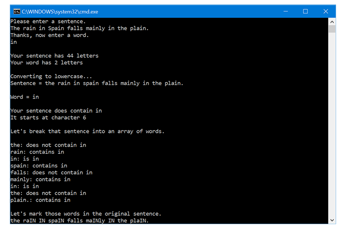
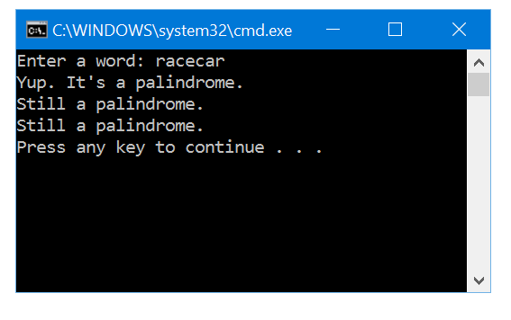

| String Methods | String Methods Grouped By Category | Example Program - StringTester | Example Program - PalindromeChecker |
The Java String class is used to store and manipulate character sequences. The String class has many constructor methods. Three commonly used constructors are given below.
String() String(String original) String(char[] text)
The first constructor creates a new empty String object. There is a difference between a String object that contains no characters and a null pointer. The second creates a new String object containing the same character sequence as the argument String, original. The third constructor creates a new String object with the same character sequence as the char array text.
A new String can also be created by assigning a String constant to the variable.
String s = "Some text";
This assignment statement allows new values to be assigned to a String as if it were a primitive data type. But String is not a primitive data type. The above is rewritten by the compiler.
s = new String ("Some text");
The String class contains many useful methods that can be called on String objects. String methods do not alter the existing String object, but return a new String object, or information about the existing object. Many of the String methods are overloaded. The methods listed in this section are only some of those in the String class.
Note that the length() method is a method, and requires parentheses, even though it takes no arguments. Don't confuse the String length() method with the length parameter used to get the length of an array, which does not use parentheses.
boolean equalsIgnoreCase (String s)
The equalslgnoreCase() method returns true if the object the method is called on has exactly the same text, not including case, as the String s.
String string1 = "gigabytes"; String string2 = "GiGaByTeS"; if(string1.equalsIgnoreCase(string2)) { System.out.println("Close enough!"); }
String toLowerCase()
The toLowerCase() method creates and returns a new String object with the same text as the String object the method is called on, but converts all the text to lower case.
String toUpperCase()
The toUpperCase() method creates and returns a new String object with the same text as the String object the method is called on, but converts all the text to upper case.
Since these methods return String objects, methods can be called on them. The example below shows a complex use of the contains() method. The statement converts both sentence and word to uppercase before checking the sentence for the word. The contains() method is called on the String returned from the toUpperCase() method called on the String sentence. The argument to the contains() method is the String object returned from the call to toUpperCase() on word.
String sentence = "The rain in Spain"; String word = "In"; if(sentence.toUpperCase().contains(word.toUpperCase())) { System.out.println("The sentence contains the word IN"); }
String trim()
The trim() method creates and returns a new String object with the same text as the String object the method is called on, but removes white space (spaces, tabs,and newlines) from either end.
String word = " Rivendell "; String trimmedWord = word.trim();
After the two statements above, the String word still contains spaces before and after Rivendell, but the String trimmedWord does not.
word = " Rivendell " trimmedWord = "Rivendell"
char charAt(int index);
The charAt() methods returns one of the characters from the String object the method is called on. The method requires one argument of type int, which represents the index of the desired character. The first character of the String is at index 0, just as the first element of an array is at index 0.
String word = "characters"; char letter = word.charAt(2);
These statements assign the character 'a' to the char variable letter.
String substring (int beginIndex) String substring (int beginIndex, int endIndex)
There are two versions of the substring() method. Both methods create and return a new String object that contains only some of the characters in the String object the method is called on.
The first version only requires one argument, which specifies where in the String to start. The method makes a copy of the original String starting at beginIndex, and ending at the end of the String.
The second version requires two arguments. The first is the index of the first character to be included in the substring. The second specifies the end of the substring. All characters up to this index will be included, but the character at this index will not.
String sentence ="It does say colonel on my uniform. "; String phrase = sentence.substring(3, 19);
After the statements above, the String phrase holds the text, "does say colonel".
int indexOf (String substring) int indexOf (String substring, int beginIndex)
There are two versions of the indexOf() method. Both methods search for a substring in the String they are called on, and return the index where the substring is first found. If the substring is not found within the String, the method returns -1.
The first version searches the entire String for the substring. If the substring is found, an integer is returned specifying the index in the String were the substring first appears.
The second version searches only part of the String, starting at beginIndex. It is common to use the first version to find the first occurrence of a substring, and to use the second version to find subsequent occurrences.
The example code below searches for the word "in" using indexOf(). Once the word is found the first time, we use indexOf() to search the String again starting one character after the last place the word was found. When indexOf() returns a value of -1 , we know we've found all occurrences of our search word.
String sentence = "The rain in Spain"; int index = sentence.indexOf("in"); System.out.println("Found it at index" + index); index = sentence.indexOf("in", index + 1); while(index != -1) { System.out.println("Found it again at index" + index); index = sentence.indexOf("in", index + 1); }
String[] split(String seperator)
The split() method seperates a String into an array of Strings and returns this array. The method takes one argument of type String. This argument defines the seperator that will be used to split the String into an array. The String will be broken into substrings at each occurence of the seperator. The seperator us not included in any of the returned array elements.
In the example below, a String containing semicolons is created. This String is then split into a String array using the semicolons as a separator. Then the individual words are printed.
String sentence = "My;four;favorite;words"; String[] words = sentence.split(";"); for(int i = 0; i < words.length; i++) { System.out.println(words[i]); }
char[] toCharArray()
The toCharArray() method creates a character array using the characters in the String object the method is called on. The method creates and returns a new char array having the same length as the original String. The method requires no arguments.
In the example below, the String word is separated into individual characters, which are printed.
String word = "Namarie"; char[] letters = word.toCharArray() ; for (int i = 0; i < letters.length; i++) { System.out.println(letters[i]); }
String replaceAll(String original, String replacement)
The replaceAll() method searches the String object the method is called on, and replaces all occurrences of the String original with the String replacement. A new String object is created with the changes, and returned by the method.
In the example below, a String is created with a spelling mistake. The replaceAll() method is used to replace all occurrences of "wong" with "wrong".
String line = "wong is spelled wong on this line"; System.out.println(line); line = line.replaceAll("wong", "wrong"); System.out.println(line);
boolean startsWith (String s) boolean endsWith (String s)
The StartsWith() and endsWith() methods return true only if the String the method is called on starts with or ends with the String s.
The methods below are used to compare two Strings. Either of the String objectsmight contain a single character, a word, a sentence, or the text of an entirebook. Note that these methods all return a boolean value.
boolean equals (String s) boolean equalsIgnoreCase (String s) boolean contains (String s) boolean startsWith (String s) boolean endsWith (String s)
The methods below manipulate existing Strings in common ways.
String toLowerCase() String toUpperCase() String trim() String replaceA11 (String original, String replacement)
The methods below get information about the String they are called on. The indexOf() method is used to search Strings.
int length() int indexOf(String s) int indexOf(String s, int index)
The methods below can be used to pull a String apart. A different method is chosen based on the type of data it breaks the String into.
char charAt(int index) char[] toCharArray() String substring(beginIndex) String substring (int beginIndex, int endIndex) String[] split (String separator)
Strings can be put together using the concatenation operator (+) to join Strings, or the String constructor to join a char array.
String newString = oldString1 + oldString2 ; String newString = newString(charArray);
A combination of concatenation and the substring() method can be used to remove part of a String based on index value. Below, the third character is removed.
String newString = oldString.subString(O, 3) + oldString.subString(4) ; String newString = oldString.substring(O, 3) + "@" + oldString.subString(4);
The StringTester program asks the user to enter a sentence, and a word.Then it uses String methods to search and process the Strings.
import java.util.Scanner; public class StringTester { public static void main(String[]args) { Scanner keyboard = new Scanner(System.in); String sentence; String word; int sentenceLength; int wordLength; System.out.println("Please enter a sentence."); sentence = keyboard.nextLine().trim(); System.out.println("Thanks, now enter a word."); word = keyboard.nextLine().trim(); System.out.print("\nYour sentence has " + sentence.length() + " letters "); System.out.println( "\nYour word has " + word.length() + " letters"); System.out.print("\nConverting to lowercase..."); sentence = sentence.toLowerCase(); word = word.toLowerCase(); System.out.println("\nSentence = " + sentence); System.out.println("\nWord = " + word); if(sentence.contains(word)) { System.out.println("\nYour sentence does contain " + word); System.out.println("It starts at character " + sentence.indexOf(word)); } else { System.out.println("\nYour sentence does not contain " + word); } System.out.println("\nLet's break that sentence into an array of words."); System.out.println(""); String[] words = sentence.split(" "); for(int i = 0; i < words.length; i++) { if(words[i].equals(word)) { System.out.println(words[i] + ": is " + word); } else { if(words[i].contains(word)) { System.out.println(words[i] + ": contains " + word); } else { System.out.println(words[i] + ": does not contain " + word); } } } System.out.println("\nLet's mark those words in the original sentence."); sentence = sentence.replaceAll(word, word.toUpperCase()); System.out.println(sentence); } }
StringTester running in Windows.

The PalindromeChecker program checks for palindrome words. A word is a palindrome if reversing it yields the same word. The words noon and level are palindromes.
import java.util.Scanner; public class PalindromeChecker { public static void main(String[] args) { Scanner keyboard = new Scanner(System.in); String word; boolean palindrome = true; int length; System.out.print("Enter a word: "); word = keyboard.nextLine(); length = word.length(); // Using characters char c1; char c2; palindrome = true; for(int i = 0; i < length/2; i++) { c1 = word.charAt(i); c2 = word.charAt(length - i - 1); if(c1 != c2) { palindrome = false; } } if(palindrome) { System.out.println("Yup. It's a palindrome."); } else { System.out.println("Nope. Not a palindrome."); } // Using Strings String s1; String s2; palindrome = true; for(int i = 0; i < length/2; i++) { s1 = word.substring(i, i + 1); s2 = word.substring(length - i - 1, length - i); if(!s1.equals(s2)) { palindrome = false; } } if(palindrome) { System.out.println("Still a palindrome."); } else { System.out.println("Still not a palindrome."); } //Using character arrays char[] a = word.toCharArray(); palindrome = true; for(int i = 0; i < length/2; i++) { if(a[i] != a[length - i - 1]) { palindrome = false; } } if(palindrome) { System.out.println("Still a palindrome."); } else { System.out.println("Still not a palindrome."); } } }
PalindromeChecker running in Windows.

The program uses three different approaches to check the word. The first approach uses the charAt() method and a for loop to step through the string both forward and backward.
In the first pass through the loop, one char, c1, is set to the first character in the String. Another char, c2, is set to the last character in the String. As i increases, c1 steps up through the String while c2 steps down.
c1 = word.charAt(i); c2 = word.charAt(length - i - 1);
Since the first half of the string is being compared to the last half, the for loop only needs to run for half the length of the word.
for(int i = 0; i < length/2; i++)
The second approach uses the substring() method to represent one character of the String at a time as a String.
s1 = word.substring(i, i + 1); s2 = word.substring(length - i - 1, length - i);
Since the substring() method with two arguments does not return the Character at the ending index, if the second argument is one greater than the first argument, only the character at the beginning index will be returned. The Strings are then compared using the equals() method.
if(!s1.equals(s2)) { palindrome = false; }
The third approach uses the toCharArray() method to convert the String to an array of chars. The elements are compared in a similar way as in the other two approaches.
if(a[i] != a[length - i - 1]) { palindrome = false; }
Notice that in the third approach new variables are not made to hold the characters as the loop steps through the String. The same could be done for the first two approaches, but the code starts to become hard to read.
if(word.charAt(i)!= word.charAt(length - i - 1)) { palindrome = false; } if(!word.substring(i, i + 1).equals(word.substring(length - i - 1, length - i))) { palendrome = false; }